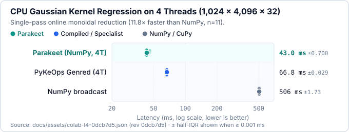
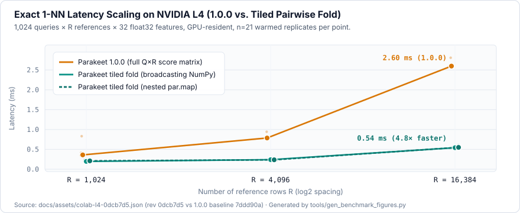
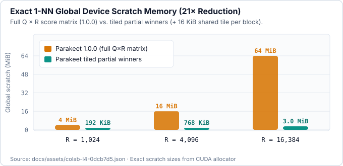
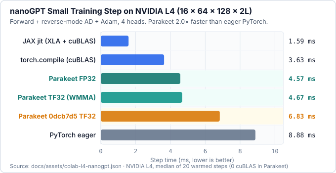
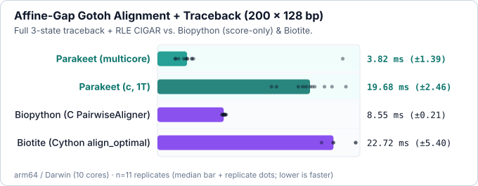
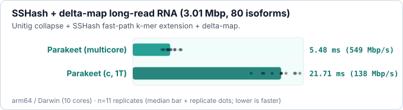
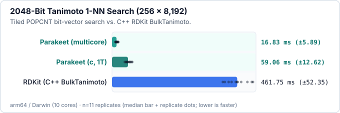
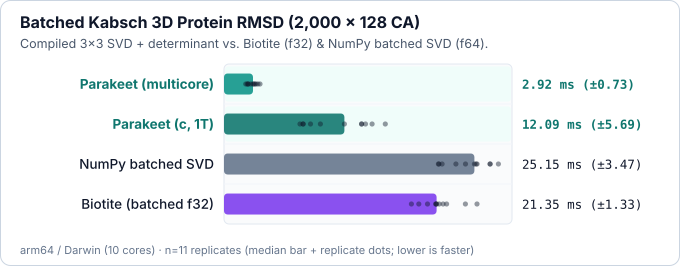
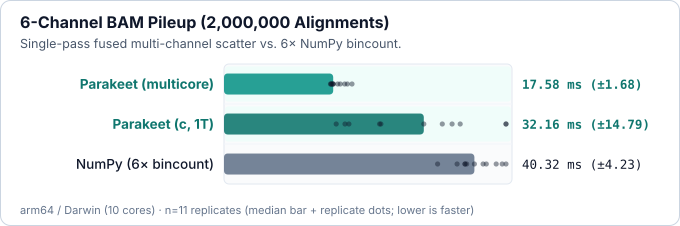

Benchmarks¶
Parakeet is benchmarked head-to-head against general array compilers
(torch.compile,
JAX jit,
CuPy, NumPy) and specialist libraries
(Faiss,
PyKeOps,
scikit-learn, SciPy,
PyTorch SDPA /
cross_entropy,
edlib, Biopython,
Biotite, and RDKit).
Every figure plots all individual warmed replicates (where recorded), the
interquartile range (IQR, 25th–75th percentile), and the median directly
from the committed raw JSON logs, and every workload links to its runnable
source code.
At a glance (NVIDIA L4 & 4-thread CPU)¶
GPU and CPU cross-framework measurements come from Google Colab VMs with an
NVIDIA L4 GPU and a 4-thread CPU (float32, GPU inputs resident on
device, explicit synchronization, reference-checked outputs, n = 21 GPU
replicates / n = 11 CPU replicates).
Download forward-suite raw JSON (0dcb7d5) ·
Download updated nanoGPT L4 JSON (7bb1dcc).
Baseline policy & Parakeet variants: Every GPU benchmark includes the same general array-compiler matrix (Parakeet, PyTorch eager,
torch.compile, JAXjit, and CuPy), plus domain-specific libraries on the tasks they support (Faiss / scikit-learn / SciPy for nearest-neighbor search; PyKeOps for pairwise kernels; edlib / Biopython / Biotite / RDKit for bioinformatics). Where multiple Parakeet spellings, precision modes, or compiler revisions were measured on the same hardware (NumPy vs.par.map, current vs. earlier revision, FP32 vs. TF32, multicore vs. 1-thread), all Parakeet variants are plotted together.
Key takeaways:
- Exact 1-NN (
1,024 × 4,096 × 32): On the L4 GPU, Parakeet's ordinary broadcasting NumPy (0.223 ms) and nestedpar.mapform (0.225 ms) both beattorch.compile(cdist)(0.257 ms), PyTorchcdist(0.251 ms), JAXjit(0.500 ms), Parakeet1.0.0(0.787 ms), PyKeOps (0.953 ms), and CuPy (16.93 ms), trailing only FaissGpuIndexFlatL2(0.150 ms). On 4 CPU threads, Parakeet (7.91 ms) beats Faiss Flat (8.42 ms), PyKeOps (29.03 ms), SciPycKDTree(54.27 ms), and NumPy (472.3 ms), just behind scikit-learn brute (6.49 ms). - Scaling to 16,384 references: Tiled GPU pairwise folds cut latency by
4.8× (
2.597 ms → 0.542 mson L4) and cut global scratch memory by 21× (64 MiB → 3 MiB, plus a16 KiBshared-memory tile per block). - Gaussian kernel regression: On 4 CPU threads, Parakeet (42.99 ms)
beats PyKeOps (66.77 ms) and
NumPy (505.8 ms, 11.8× faster). On GPU, Parakeet (1.053 ms) beats
PyKeOps (1.254 ms) and CuPy (17.18 ms), while
torch.compile(cdist)(0.308 ms) and JAXjit(0.602 ms) lead. - End-to-end nanoGPT training (NVIDIA L4, zero cuBLAS in Parakeet):
Shape-adaptive double-buffered
cp.asyncWMMA tiles, multi-stage warp-per-row LayerNorm pipelines, single-pass atomic reductions, disjoint-union horizontal map batching, and alpha-canonical kernel deduplication cut launches/step by 63%–66% (214 → 80onL=2,437 → 147onL=4) and cut step time from 6.83 ms to 4.57 ms on the small 2-layer model (1.95× faster than PyTorch eager at 8.88 ms) and from 32.32 ms to 17.81 ms (1.81× faster) on the medium 4-layer model, beating PyTorch eager (18.93 ms, backed by cuBLAS and cuDNN) and within 1.21× oftorch.compile(14.76 ms) while compiling faster than bothtorch.compile(29.3 s) and JAXjit(23.8 s) (9.35 sonL=2,18.15 sonL=4).
Pairwise search and kernel regression¶
Exact 1-NN (1,024 × 4,096 × 32, float32)¶


Gaussian kernel regression (1,024 × 4,096 × 32, float32)¶


Summary table (1,024 × 4,096 × 32, float32)¶
Warmed medians in milliseconds (lower is faster). Faiss and scikit-learn times
exclude index construction. Implementations:
nearest_numpy,
exact_1nn,
rbf_kernel_regression.
| Implementation | CPU 1-NN (ms) | GPU 1-NN (ms) | CPU Gaussian (ms) | GPU Gaussian (ms) |
|---|---|---|---|---|
| Parakeet (broadcasting NumPy) | 8.050 | 0.223 | 42.990 | 1.053 |
Parakeet (nested par.map) |
7.907 | 0.225 | - | - |
Faiss Flat (IndexFlatL2 / GpuIndexFlatL2) |
8.417 | 0.150 | - | - |
| scikit-learn brute | 6.492 | - | - | - |
torch.compile over cdist |
- | 0.257 | - | 0.308 |
PyTorch cdist |
- | 0.251 | - | 0.444 |
torch.compile over broadcasting |
- | 0.688 | - | 0.598 |
JAX jit |
- | 0.500 | - | 0.602 |
PyKeOps Genred |
29.027 | 0.953 | 66.769 | 1.254 |
SciPy cKDTree (exact) |
54.266 | - | - | - |
| NumPy / CuPy broadcasting | 472.283 | 16.932 | 505.780 | 17.177 |
At the smaller 256 × 1,024 × 3 shape, CPU PyKeOps led at 0.219 ms
(interleaved sweep: 0.241 ms) vs. 0.559 ms for Parakeet broadcasting, and
GPU JAX jit led at 0.079 ms vs. 0.179 ms for Parakeet broadcasting. Note
that on the large Gaussian workload, JAX's first-call compilation took 672 s
before reaching its 0.602 ms warmed median (all tables report warmed
execution times).
Scaling exact 1-NN with reference count¶
Eliminating the materialized Q × R distance matrix changes both memory
scaling and GPU throughput. On both NVIDIA L4 (0dcb7d5 vs. 1.0.0 baseline
7ddd90a) and NVIDIA A10G (raw A10G JSON),
both the broadcasting NumPy form and the explicit operator form compile to the
same tiled pairwise fold with zero host transfers and exact first-index
tie/NaN semantics.


References (Q = 1,024, D = 32) |
L4 1.0.0 NumPy |
L4 Tiled NumPy | L4 Tiled par.map |
A10G 1.0.0 NumPy |
A10G Tiled NumPy | A10G Tiled par.map |
1.0.0 Global Scratch |
Tiled Global Scratch |
|---|---|---|---|---|---|---|---|---|
| 1,024 | 0.361 ms | 0.197 ms | 0.210 ms | 0.296 ms | 0.135 ms | 0.139 ms | 4 MiB | 192 KiB |
| 4,096 | 0.787 ms | 0.241 ms | 0.236 ms | 0.853 ms | 0.190 ms | 0.180 ms | 16 MiB | 768 KiB |
| 16,384 | 2.597 ms | 0.542 ms | 0.550 ms | 2.898 ms | 0.458 ms | 0.470 ms | 64 MiB | 3.0 MiB |
Each active tiled threadblock also uses a 16 KiB shared-memory score tile.
The 1.0.0 nested-map form was not GPU-eligible (it required CPU fallback);
the tiled pairwise fold executes both spellings strictly on CUDA with zero
fallbacks.
Structured state (par.fold vs. NumPy)¶
At 1,024 × 4,096 × 32 on the L4 with strict CUDA dispatch and zero timed host
transfers (browse both programs):
- Exact 1-NN: explicit
par.fold(nearest_fold) took 0.235 ms vs. broadcasting NumPy (nearest_numpy) at 0.222 ms. - Inverse-distance smoothing: explicit
par.fold(smooth_fold) took 0.270 ms (2 kernel launches) vs. broadcasting NumPy (smooth_numpy) at 0.275 ms (3 kernel launches).
Forward GPU kernels and nanoGPT training¶
Forward GPU workloads (NVIDIA L4, n = 21 warmed calls)¶


| Workload | Parakeet | PyTorch | torch.compile |
JAX jit |
CuPy | Implementation |
|---|---|---|---|---|---|---|
GBDT split (262,144 × 256 bins) |
0.370 ms | 0.335 ms | 0.208 ms | 0.244 ms | 0.647 ms | gbdt_best_split |
Causal attention (4 × 512 × 64) |
0.493 ms | 0.104 ms (SDPA) | 0.198 ms | 0.145 ms | 0.490 ms | causal_flash_attention |
Linear cross-entropy (512 × 128 × 2,048) |
1.447 ms | 0.068 ms (cross_entropy) |
0.155 ms | 0.189 ms | 0.431 ms | cut_cross_entropy |
End-to-end nanoGPT training (NVIDIA L4)¶


Each step runs the full forward pass, reverse-mode backpropagation, and Adam
update (4 attention heads, median of 20 warmed steps in milliseconds). Parakeet
and JAX jit compile the
optimizer directly into the training step;
torch.compile
wraps the forward/loss and runs the optimizer separately. Parakeet compiles all
GEMM, attention, LayerNorm, and Adam kernels natively via NVRTC with zero
cuBLAS calls (cutting launches/step from 437 to 147 on L=4 and from
214 to 80 on L=2, with 429 → 44 alpha-unique NVRTC kernels on L=4).
FP32 loss curves match PyTorch (4.20043 → 1.42628 vs. 1.42628 on L=2;
4.21668 → 3.38995 vs. 3.38972 on L=4), and TF32 loss curves track JAX's
TF32. Follow the complete nanoGPT walkthrough.
| Batch × context × width × layers | Parakeet FP32 | Parakeet TF32 (WMMA) | Parakeet 0dcb7d5 TF32 |
PyTorch eager | torch.compile |
JAX jit |
|---|---|---|---|---|---|---|
16 × 64 × 128 × 2 |
4.565 ms | 4.670 ms | 6.833 ms | 8.881 ms | 3.634 ms | 1.594 ms |
32 × 128 × 256 × 4 |
35.238 ms | 17.808 ms | 32.317 ms | 18.925 ms | 14.759 ms | 9.184 ms |
Bioinformatics and structural biology (Apple M1 Pro, 10 cores)¶
Head-to-head comparison of compiled Parakeet 1.8.0 kernels against
specialist C/C++/Cython libraries
(edlib 1.3.9,
Biopython 1.88 C PairwiseAligner,
Biotite 2.0.0,
RDKit 2026.9.2, and
NumPy 2.5.5), verified for exact output agreement before
timing (n = 11 warmed replicates).
Download raw JSON.
Sequence alignment and long-read RNA mapping¶



Cheminformatics, structural biology, and BAM pileup¶



| Workload | Parakeet (multicore) | Parakeet (c, 1T) |
Specialist / Baseline | Speedup vs. Baseline | Implementation |
|---|---|---|---|---|---|
Edit distance (1,000 × 256 bp, Myers) |
2.043 ms (±0.61) | 3.778 ms (±0.08) | edlib (C++ Myers): 7.577 ms | 3.7× (2.0× at 1T) | examples/bio_algorithms.py |
Affine-gap Gotoh + traceback (200 × 128 bp) |
3.816 ms (±1.39) | 19.685 ms (±2.46) | Biopython C (score-only): 8.555 ms; Biotite Cython: 22.723 ms | 2.2× vs Biopython, 6.0× vs Biotite | examples/bio_algorithms.py |
2048-bit Tanimoto 1-NN (256 × 8,192) |
16.829 ms (±5.89) | 59.056 ms (±12.62) | RDKit (C++ BulkTanimoto): 461.748 ms |
27.4× (7.8× at 1T) | examples/bio_gallery.py |
Batched Kabsch 3D RMSD (2,000 × 128 CA) |
2.915 ms (±0.73) | 12.094 ms (±5.69) | Biotite (batched f32): 21.352 ms; NumPy batched SVD (f64): 25.152 ms | 7.3× vs Biotite, 8.6× vs NumPy | examples/bio_algorithms.py |
6-channel BAM pileup (2M alignments) |
17.576 ms (±1.68) | 32.160 ms (±14.79) | NumPy (6× bincount): 40.317 ms |
2.3× (1.3× at 1T) | examples/bio_gallery.py |
SSHash + delta-map long-read RNA (3.01 Mbp, 80 human Ensembl isoforms) |
5.480 ms (548.6 Mbp/s) | 21.705 ms (138.5 Mbp/s) | 9.70× unitig collapse, 92.2% hash-probe skip, Oarfish EM r = 0.965 |
4.0× multicore scaling | examples/patro_longread_rna.py |
Notes on fairness:
- On single-threaded Gotoh alignment, Biopython's C
PairwiseAligner.score()(8.555 ms) is 2.3× faster than Parakeet 1T (19.685 ms) because Biopython computes scores only whereas Parakeet'sgotoh_global_alignpopulates full traceback tables and builds run-length-encoded CIGAR arrays; across cores, Parakeet multicore (3.816 ms) finishes 2.2× ahead. - On Kabsch 3D RMSD, Biotite internally converts coordinates to
float32, while both Parakeet (compilednp.linalg.svd+det) and NumPy compute infloat64. - On
edlibandRDKit, part of Parakeet's advantage comes from batching the entire query set inside one GIL-free compiled loop instead of crossing the Python-to-C boundary once per read or fingerprint.
Benchmark implementations and reproduction¶
Every table and figure on this page is backed by runnable repository code and raw JSON samples:
| Suite / Workload | Runnable code | Repro command |
|---|---|---|
| Release cross-framework suite (CPU & GPU) | benchmarks/release_comparison.py |
python benchmarks/release_comparison.py / modal run tools/modal_release_bench.py |
| nanoGPT GPU training suite | tools/colab_nanogpt_bench.py |
python tools/colab_nanogpt_bench.py |
| Bioinformatics head-to-head suite | benchmarks/bio_head_to_head.py |
python benchmarks/bio_head_to_head.py |
| GPU exact 1-NN pairwise fold scaling | benchmarks/gpu_pairwise_fold.py |
python benchmarks/gpu_pairwise_fold.py / modal run tools/modal_pairwise_fold.py |
| Gallery kernels (1-NN, smoothing, RBF, attention, CCE, MLA, GQA, Mamba-2, tropical, GBDT) | examples/algebraic_gallery.py |
python -m examples.algebraic_gallery |
| Character-level nanoGPT training | examples/nanogpt.py |
python examples/nanogpt.py |
| Bioinformatics workloads | benchmarks/bio_workloads.py |
python benchmarks/bio_workloads.py |
| Local CPU micro-benchmarks (NumPy vs. 1/N threads) | benchmarks/run.py |
python benchmarks/run.py |
| Regenerate all SVG figures on this page | tools/gen_benchmark_figures.py |
python tools/gen_benchmark_figures.py |
Historical 1.0.0 baseline (Modal NVIDIA A10 & 4-vCPU)¶
For continuity with the original 1.0.0 release (compiler revision
0345559f, NVIDIA A10 24 GiB, driver 620.70.06, 4-vCPU worker), the initial
pre-pairwise-fold release measurements are archived below.
Download raw 1.0.0 Modal JSON.
1.0.0 Four-vCPU worker (warmed median, ms)¶
| Implementation | Small 1-NN (256×1024×3) |
Large 1-NN (1024×4096×32) |
Small Gaussian | Large Gaussian |
|---|---|---|---|---|
| Parakeet, broadcasting NumPy | 0.664 | 6.593 | 2.971 | 28.951 |
Parakeet, nested par.map |
0.638 | 6.132 | - | - |
PyKeOps Genred |
0.255 | 18.246 | 1.087 | 38.038 |
Faiss IndexFlatL2 |
0.033 | 9.577 | - | - |
SciPy cKDTree (exact) |
1.441 | 51.846 | - | - |
| scikit-learn brute | 1.042 | 6.647 | - | - |
| NumPy broadcasting | 9.899 | 326.690 | 10.915 | 359.939 |
1.0.0 NVIDIA A10 (warmed median, ms; prior to GPU pairwise-fold tiling)¶
| Implementation | Small 1-NN | Large 1-NN | Small Gaussian | Large Gaussian | Causal Attn | Linear CE | GBDT Split |
|---|---|---|---|---|---|---|---|
Parakeet 1.0.0 |
0.261 | 0.796 | 0.226 | 1.130 | 0.386 | 1.604 | 0.276 |
| PyTorch eager / specialist | 0.128 | 0.323 | 0.166 | 0.568 | 0.090 | 0.069 | 0.225 |
torch.compile |
0.089 | 0.208 | 0.106 | 0.294 | 0.116 | 0.088 | 0.175 |
JAX jit |
0.115 | 0.424 | 0.098 | 0.663 | 0.217 | 0.133 | 0.188 |
PyKeOps Genred |
0.262 | 0.962 | 0.295 | 1.289 | - | - | - |
Faiss GpuIndexFlatL2 |
0.079 | 0.154 | - | - | - | - | - |
| CuPy | 0.483 | 12.359 | 0.527 | 12.736 | 0.326 | 0.255 | 0.420 |
Methodology notes¶
- Every benchmark arm is checked against a reference implementation (exact index equality for 1-NN and split finding; tight floating-point tolerance for reductions, attention, and training losses).
- GPU arms time GPU-resident inputs with explicit CUDA synchronization before and after each replicate; first-call compilation times are recorded separately in the JSON downloads and excluded from warmed medians.
- On CPU, Parakeet's pairwise fold allocates an
8 KiB(16 × 128float32) score tile plus192 Bof row summaries per active strip; on GPU, it uses a16 KiBshared-memory score tile per block andO(Q · #tiles)global partial winners rather than anO(Q · R)distance matrix.